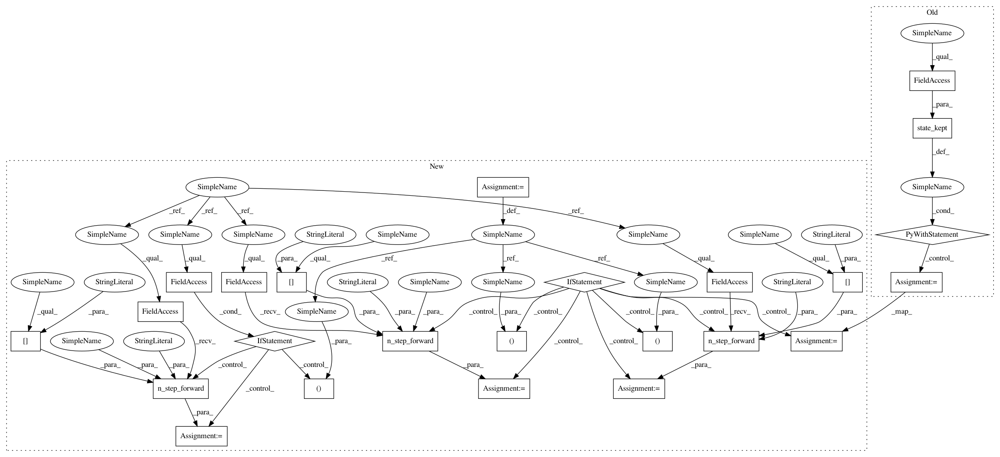

f57e1d9d32a84f60738a73fa35b407999394501e,chainerrl/agents/double_pal.py,DoublePAL,_compute_y_and_t,#DoublePAL#Any#,18
Before Change
with state_kept(self.q_function):
next_qout = self.q_function(batch_next_state)
with state_kept(self.target_q_function):
target_next_qout = self.target_q_function(
batch_next_state)
next_q_max = F.reshape(target_next_qout.evaluate_actions(
next_qout.greedy_actions), (batch_size,))
batch_rewards = exp_batch["reward"]
After Change
class DoublePAL(pal.PAL):
def _compute_y_and_t(self, exp_batch):
batch_state = exp_batch["state"]
batch_size = len(exp_batch["reward"])
if self.recurrent:
qout, _ = self.model.n_step_forward(
batch_state, exp_batch["recurrent_state"],
output_mode="concat")
else:
qout = self.model(batch_state)
batch_actions = exp_batch["action"]
batch_q = qout.evaluate_actions(batch_actions)
// Compute target values
with chainer.no_backprop_mode():
batch_next_state = exp_batch["next_state"]
if self.recurrent:
next_qout, _ = self.model.n_step_forward(
batch_next_state, exp_batch["next_recurrent_state"],
output_mode="concat")
target_qout, _ = self.target_model.n_step_forward(
batch_state, exp_batch["recurrent_state"],
output_mode="concat")
target_next_qout, _ = self.target_model.n_step_forward(
batch_next_state, exp_batch["next_recurrent_state"],
output_mode="concat")
else:
next_qout = self.model(batch_next_state)
target_qout = self.target_model(batch_state)
target_next_qout = self.target_model(batch_next_state)
next_q_max = F.reshape(target_next_qout.evaluate_actions(
next_qout.greedy_actions), (batch_size,))
batch_rewards = exp_batch["reward"]
In pattern: SUPERPATTERN
Frequency: 3
Non-data size: 24
Instances
Project Name: chainer/chainerrl
Commit Name: f57e1d9d32a84f60738a73fa35b407999394501e
Time: 2019-04-07
Author: muupan@gmail.com
File Name: chainerrl/agents/double_pal.py
Class Name: DoublePAL
Method Name: _compute_y_and_t
Project Name: chainer/chainerrl
Commit Name: b0a406319a97799a86ca23eed4006b01a5a7256b
Time: 2019-04-07
Author: muupan@gmail.com
File Name: chainerrl/agents/al.py
Class Name: AL
Method Name: _compute_y_and_t
Project Name: chainer/chainerrl
Commit Name: ac6bd4d481e025aae1bc7c8830a076e57b293204
Time: 2019-04-07
Author: muupan@gmail.com
File Name: chainerrl/agents/pal.py
Class Name: PAL
Method Name: _compute_y_and_t
Project Name: chainer/chainerrl
Commit Name: f57e1d9d32a84f60738a73fa35b407999394501e
Time: 2019-04-07
Author: muupan@gmail.com
File Name: chainerrl/agents/double_pal.py
Class Name: DoublePAL
Method Name: _compute_y_and_t